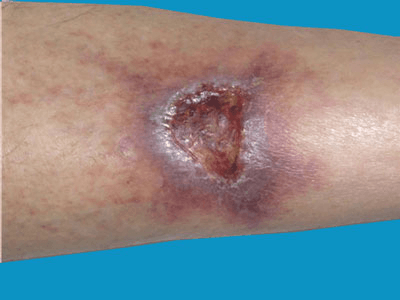

What is pyoderma gangrenosum?
Pyoderma gangrenosum is a rare treatable cause of skin ulcers. It is not related to gangrene. Pyoderma gangrenosum
is not ‘catching’ and cannot be transferred from or to another person by touching or in any other way.

For about half of the people with pyoderma gangrenosum there are no known reasons for it. It may start after minor skin
damage or injury. Sometimes other conditions may be associated with pyoderma gangrenosum, such as inflammatory bowel
disease (IBD), arthritis or certain blood disorders. It is important to know that having pyoderma gangrenosum does
not mean that you have these diseases.
Pyoderma gangrenosum usually occurs in young and middle-aged adults but the way it looks can vary from person to person.
It may start as a small pimple, red bump or blood-blister. The skin then breaks down resulting in an ulcer which often
oozes fluid. The ulcer can enlarge rapidly. The edge of the ulcer may look purplish. The most common places where
pyoderma gangrenosum occurs are the legs, although it can be found anywhere on the body. Sometimes it may occur
around the site of a stoma (e.g. colostomy), or in a surgical wound.
In pyoderma gangrenosum, there is usually a single large ulcer but occasionally there may be multiple ulcers.
Ulcers may become infected, oozing fluid or pus. Pain or discomfort are common symptoms. Pyoderma gangrenosum
is not cancer and does not lead to cancer.
There is no specific blood test for pyoderma gangrenosum. Certain conditions such as venous ulcers, inflammation of
blood vessels, infection, injury, inflammatory disorders and cancer can look like pyoderma gangrenosum. This is why
your doctor may take a sample of skin (biopsy) to examine under the microscope in a laboratory to confirm the diagnosis.
The wound should also be swabbed and cultured for bacteria to rule out associated infection. Your doctor may also
request blood tests to check for conditions that may be associated with pyoderma gangrenosum.
Pyoderma gangrenosum is often difficult to treat and may take some time to
heal. More than one treatment may need to be tried. Skin grafts and surgery
are not treatment options as they often fail and may cause enlargement of the
ulcer.
Treatment may be divided into local treatment (topical) or systemic. The
specific treatment depends on the severity of the disease.
1.Local applications to the skin (topical treatments)
- Strong steroid preparations or calcineurin inhibitors (tacrolimus) applied
topically to the affected skin often help, especially with small ulcers,
and may help to reduce the pain.
2.Systemic treatments
- Oral treatments such as antibiotics (e.g. minocycline) or dapsone may
be useful when treating small ulcers. Dapsone can affect the
haemoglobin level in the blood. Blood tests are performed weekly to
begin with, and patients are asked to report any unusual symptoms
(sore throat, dizziness or faintness) urgently to their doctor. Dapsone
also causes some patients to have headaches.
- Steroid tablets (e.g. prednisolone) are used to reduce inflammation.
They may be used alone or in combination with other
immunosuppressive agents. If taken for many months prednisolone
may cause side effects including high blood pressure (hypertension)
and high blood sugar (diabetes). Long-term oral steroid use can cause
other side effects including bone thinning (osteoporosis). Your
pharmacist may give you a card to carry if you have to take steroid
tablets for a long time.
- Immunosuppressive medicines reduce the action of the body’s own
defence system (the immune system). They are often used to make
kidney, liver and heart transplants successful, but are also often useful
to treat other severe skin conditions and severe pyoderma
gangrenosum. Each one of these medicines has potential side effects
and regular monitoring for side effects is an important part of your care.
- Immunosuppressive medicines include:
- Mycophenolate mofetil
- Ciclosporin
- Azathioprine